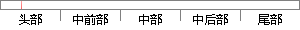

静止的无源单站定位系统对运动目标也具备可观测性，而当单站定位系统和目标均处于静止状态或者均处于匀速直线运动状态时，系统不具备可观测性。
片段位置图

相似结果|
相似片段 1：。目标状态可观测性的好坏由观察者(传感器)采用的机动方式和多站被动传感器定位技术研究机动路线所决定。3．3常用定位算法分类一般情况下，被动观测系统无法直接得到目标的距离信息。通常的解决方法是采用运动的观测站对静止目标进行定位或者是采用多个静止观测站对目标进行定位。图
|
※ 片段修改建议 ※
近似词参考：- 系统：体系
- 运动：活动
- 目标：方针 目的
- 具备：具有
- 观测：观察
- 系统：体系
- 目标：方针 目的
- 状态：状况
- 或者：或 大概
- 状态：状况
- 系统：体系
- 观测：观察
系统自动生成语句：静止的无源单站定位体系对活动方针也具有可观察性，而当单站定位体系和方针均处于静止状况或均处于匀速直线活动状况时，体系不具有可观察性。
注：本片段修改建议为系统自动生成，仅供参考。